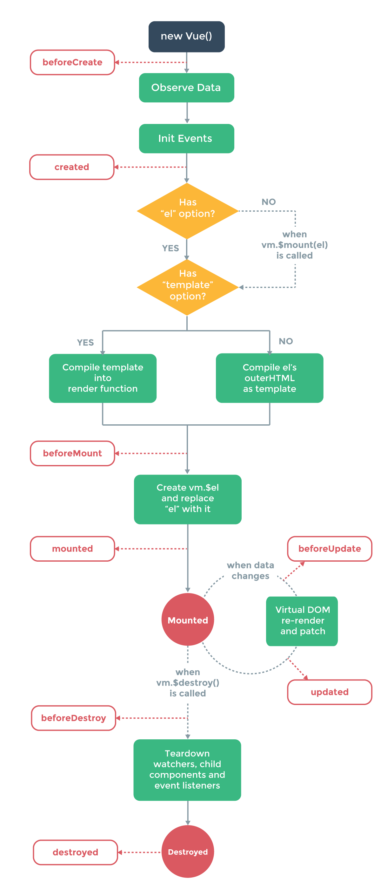

Vue.js 生命周期

1.beforeCreate --> Function
在实例初始化之后，数据观测（data observer）和event/watcher 事件配置之前调用
2.created --> Function
实例已经创建完成之后被调用，在这一步，实例已经完成以下的配置：
1.数据观测（data observer）
2.属性和方法运算
3.watch/event 事件回调
3.beforeMount --> Function
在挂载开始之前被调用，相关的 render 函数首次被调用(该钩子在服务器端渲染期间不被调用)
4.mounted --> Function
el 被新创建的 vm.$el 替换，并挂载到实例上去之后调用该钩子。如果 root 实例挂载了一个文档内元素，当 mounted 被调用时 vm.$el 也在文档内。(该钩子在服务器端渲染期间不被调用)
5.beforeUpdate --> Function
数据更新时调用，发生在虚拟 DOM 重新渲染和打补丁之前。你可以在这个钩子中进一步地更改状态，这不会触发附加的重渲染过程。(该钩子在服务器端渲染期间不被调用。)
6.updated --> Function
由于数据更改导致的虚拟 DOM 重新渲染和打补丁，在这之后会调用该钩子。
当这个钩子被调用时，组件 DOM 已经更新，所以你现在可以执行依赖于 DOM 的操作。然而在大多数情况下，你应该避免在此期间更改状态，因为这可能会导致更新无限循环。(该钩子在服务器端渲染期间不被调用。)
7.activated --> Function
keep-alive 组件激活时调用。(该钩子在服务器端渲染期间不被调用)
8.deactivated --> Function
keep-alive 组件停用时调用。(该钩子在服务器端渲染期间不被调用。)
9.beforeDestroy --> Function
实例销毁之前调用。在这一步，实例仍然完全可用。(该钩子在服务器端渲染期间不被调用。)
10.destroyed --> Function
Vue 实例销毁后调用。调用后，Vue 实例指示的所有东西都会解绑定，所有的事件监听器会被移除，所有的子实例也会被销毁。(该钩子在服务器端渲染期间不被调用)
关于指令keep-alive
在看demo的时候看到在vue-router写着keep-alive，keep-alive的含义：
如果把切换出去的组件保留在内存中，可以保留它的状态或避免重新渲染。为此可以添加一个keep-alive指令<component :is='curremtView' keep-alive></component>
<!DOCTYPE html>
<html>
<head lang="en">
<meta charset="UTF-8">
<title></title>
</head>
<body>
<div id="app">
{{msg}}
</div>
<script src="//cdn.bootcss.com/vue/2.0.8/vue.js"></script>
<script>
var vm = new Vue({
el:'#app',
data:{
msg:'Hello Vue'
},
beforeCreate: function () {
alert('实例创建之前');
},
created: function () {
alert('实例已经创建'‘);
},
beforeMount: function () {
alert('实例挂载之前');
},
mounted: function () {
alert('实例挂载到根元素 #app上');
},
beforeUpdate: function () {
alert('数据更新之前');
},
updated: function () {
alert('数据更新之后');
},
activated: function () {
alert('keep-alive 组件激活时调用');
},
deactivated: function () {
alert('keep-alive 组件停用时调用');
},
beforeDestroy: function () {
alert('实例销毁之前调用');
},
destroyed: function () {
alert('实例销毁之后调用');
}
})
</script>
</body>
</html>

微信打賞

支付寶打賞